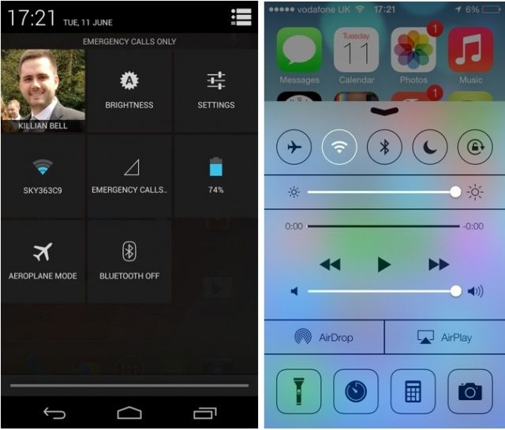

WWDC 2013
Conference and trip summary
Agenda
- Around conference
- Conference
- Thoughts after WWDC
Around conference
- 10 days in total
- Conference - 5 days (2 days more than I/O)
- 3 days outside of conference
- 10 hours at Frankfurt airport
- > 200 people in a queue for ticket change/hotel
- Missed keynotes and design awards :(
- 15 meetings
- After WWDC Meetup in Palo Alto
- Official Google I/O party with Vampire Weekend
Vampire weekend
Bash panorama
Meeting with Kevin Whinery
- "CI Simple" creator
- Long time experience
- Scared about Apple's announcements
uTest grand office opening in San Mateo
- Finally met Doron - uTest's CEO
- A lot of people from many companies
- Trulia
- eBay
Helping uTest with Autodesk visit
- Autodesk - Apphance client
- Autocad creators
- Market Street 1
- Corporate customer
Staying in startup embassy
- Co-working, co-staying place
- 12 minutes by bus/30 mins walking
- Met around 20 people
- Startup dinner
- Lots of interesting conversations
- Stolen 2 laptops
- Polaroid image taken
- Interview recorded
- Building business
Victorian houses
Alamo square
Conference in numbers
- around 6000 people
- sold out in 70 secs.
- got it through our developer-relation
- around 20% of time in queues
- 106 sessions
- 126 labs
- 7 tracks
- My attendance: 35 sessions + labs
Queues 1
Queues 2
Badge
Tracks

Differences vs. Google I/O
- Different lab organization
- Lack of 'buzz'
- Empty levels in Moscone Center
- Lack of openness
- Much better official party
Special (lunch) sessions
- Painting the future
- My secret life as a knight
- Bill Nye the science guy
Highlights
- New face - Craig Federici
- Good humor
- Finally multiple display support with full screen(!)
- Safari and iCloud keychain
- Maps across devices
- New Mac Pro
- New Mac Airs (battery!)
- iOS7
Sea lion
New Mac Pro
Borrowed 1
Borrowed 2
Borrowed 3
Borrowed 4
Borrowed 5
Borrowed 6
Borrowed 7
Important take-aways
- Apple stick to their usual schedule
- But it means also they are falling behind
- iOS increased fragmentation
- Use auto-layouts
- Continuous integration becomes mainstream for mobile
- Mobile OSs become more and more similiar
Developer tools
XCode 5
- Faster
- Good support for layouts/XIB/storyboards
- Integrated documentation
- Apple 5 LLVM
- ARC transition completed
- Support for modules
- Better static analysis
- Asset catalogs
Debugger
- Data tips - visual hints
- Breakpoints with conditions, actions…
- Enable showing frame, drawings
- Debug gauges
- XCode -> Instruments workflow
Testing
- New framework: XCTest
- Easier test running
- Better code navigation with tests
Continuous integration
- Bots
- OSX 10 server
- Extremely easy start
- Very easy to manage from XCode
- Prone to introduce mess
- Allows to run test on simulators and devices
- Great XCode integration
- Simple byt Very limited
- Lack of extensibility
iOS7 design
- Flat design
- Text style variants
- Layers
- Lack of "skeumorphism"
- Clickable elements marked by tint color
- 3D and more physical (like gravity) effects
- Use whitespace generously
- Content first - decrease the chrome, maximise content space
- Hierarchy animation effects
Multitasking
- Backround fetching
- Real multitasking
- Battery efficient
- Predictive launching
- Push notification triggers code
- Silent notifications
Powerful text kit
- Finally good text support
- Good OO patterns used
- Pagination, object wrapping, folding, interactive rich text editing, custom truncation
- All font attributes - kerning, ligatures etc.
- Letterpressing (textured fonts)
- Hit testing
- Glyphs, URLS, attachments
Core location
- Multitasking
- continuous background location, significant location change, fences
- Phone goes to sleep while GPS is still running
- Ideal for fitness apps
- iBeacons: local contexts, bluetooth + location -> region monitoring
What was missing
- No change in schedules
- No openness for others
- No support for shared libraries
- Lack of true innovations - the magic going away